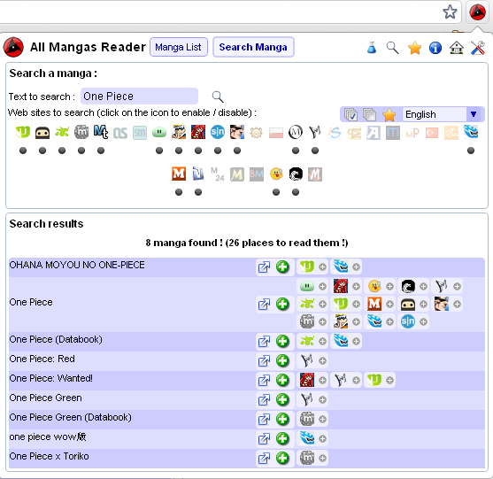
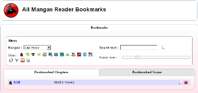
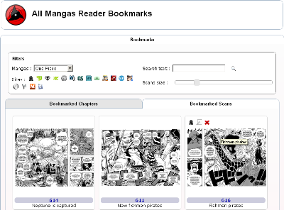
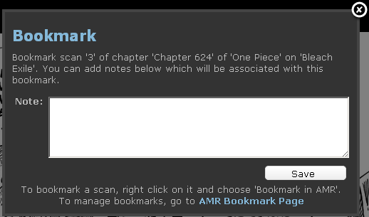

Overview
For what purpose ?
If you are a manga reader, this extension is made for you, it helps you reading mangas on your favorite web site by displaying full chapter scans instead of single pages and warns you when a new chapter of your favorite manga has been published.
If you are not a manga reader, i hope this extension will help you to become one !
All Manga Reader is a Google Chrome extension. You need to have Google Chrome to enjoy its functionnalities
What are AMR's main elements ?
AMR contains a lot of features. As a google chrome extension, the first thing to notice is the  in you google chrome extension bar.
When you click this icon, AMR's popup appears and let you access all functionalities.
in you google chrome extension bar.
When you click this icon, AMR's popup appears and let you access all functionalities.
AMR's popup

The popup contains your manga list and allows you to access all AMR's functionnalities.
- Main buttons
- Manga List : displays your manga reading list
- Search Manga : displays the manga search tool
- Access buttons
- Developpers lab : this icon is displayed if you have checked the option "I am a developper"
 Search all manga web sites : opens the search tool in a new tab
Search all manga web sites : opens the search tool in a new tab Search, view and manage bookmarks : opens the bookmarks page in a new tab
Search, view and manage bookmarks : opens the bookmarks page in a new tab- Information and help : view the help page
 All Mangas Reader web site : go to allmangasreader.com
All Mangas Reader web site : go to allmangasreader.com All Mangas Reader Options : view option page
All Mangas Reader Options : view option page This icon appears when AMR has been updated. Click here to see the release note.
This icon appears when AMR has been updated. Click here to see the release note.
- Reading list : the reading list contains two elements :
- Categories : The categories allows you to organize your mangas and to quickly view only mangas you need. View category help page for more information.
- List of mangas : The list contains information about each manga and access button to view and manage mangas
- Colors :
- Blue : The manga has no new chapter, you have already read the whole manga
- Red : A new chapter has been published !
- Grey : You don't want to follow update for this manga, you are actually reading it. View read help page to put manga in this state
- Informations :
- The icon of the mirror where the manga is read : you can view the name of the mirror when your mouse cursor is over this icon
- The name of the manga : click to acces the chapters list page of this manga on the concerned web site
- The latest chapter you have read
- icons if the manga is grouped : display all occurrences of the manga or just one. It happens when you have checked the option "Group mangas" and you read a same manga on differnet web sites
- Actions on each manga :
 Go to previous chapter
Go to previous chapter View latest chapter read
View latest chapter read Go to next chapter
Go to next chapter Go to latest published chapter
Go to latest published chapter Mark the latest chapter of this manga has read
Mark the latest chapter of this manga has read Delete this manga
Delete this manga View more actions for this manga :
View more actions for this manga :
- Progression : this indicates your reading progression for the concerned manga
- Categories : indicates in which categories this manga appears. View category help page for more information.
- Bookmarks : display the list of bookmarked chapters and scans for this manga. The list is a direct access to the bookmarked item. View bookmarks help page for more information.
- Search this manga elsewhere : open the Search Tool in the popup with the search field filled with the manga name.
- Reset manga reading : Mark the first chapter of this manga as the latest chapter read. You can then read it from start
- Stop following update / Follow updates : Mark a manga as "currently reading". The updates of this manga won't be notified. View read help page for more information.
- Actions on grouped manga (when the option "Group manga" is checked, manga with the same name (but on different web sites) will be grouped in the list. The following actions are applied to all mangas in the group :
- (near the manga name) : Mark the latest chapter of these mangas has read
- (near the manga name) : Delete these mangas
- Colors :
- Management buttons
 View timers (when AMR is updated) : display last time that AMR has updated chapters lists and mangas lists. Click on the "Update now" button to update mangas chapters lists. You must refresh the popup manually after this action.
View timers (when AMR is updated) : display last time that AMR has updated chapters lists and mangas lists. Click on the "Update now" button to update mangas chapters lists. You must refresh the popup manually after this action. Import / Export AMR manga list and preferences : opens the import export tool
Import / Export AMR manga list and preferences : opens the import export tool Mark all currently viewable mangas as read : Click here when you have read all currently displayed mangas. When mangas are organized into categories, you can display only a part of your list and mark all of them as read in one click.
Mark all currently viewable mangas as read : Click here when you have read all currently displayed mangas. When mangas are organized into categories, you can display only a part of your list and mark all of them as read in one click.- Delete all currently viewable mangas from list : Click here to delete all currently displayed mangas. When mangas are organized into categories, you can display only a part of your list and delete all of them in one click.
- All Mangas Reader's forum : discuss the extension, report bugs and request new features.
 Open All Mangas Reader's popup in a new tab
Open All Mangas Reader's popup in a new tab- All Mangas Reader on Facebook : go to AMR's Facebook page
AMR's manga bar
This bar is displayed on each web site supported in AMR when you read a chapter.
This bar can be always visible on top of the page or there can be two bars inside the page, one on the top of the chapter's scans and one below. You can choose this in the option page, "Display navigation features in one always visible bar."
- Access
- Previous : go to previous chapter
- List of chapter : click on a chapter to go to this chapter
- Next : go to next chapter
- Actions
- Click on this button to bookmark the current chapter. If the chapter is already bookmarked, the icon is . Click on it to change the associated note. View bookmarks help page for more information.
- or This action allows you to stop following updates for this manga or to restart following updates.
- Click to switch the manga display mode (book from left to right, book from right to left, scans on top of each other) for this particular manga. Clicking here overrides your display mode preference (from the option page) for this manga only.
 This action marks the current chapter as the latest chapter read.
This action marks the current chapter as the latest chapter read. This button is displayed if the option "Automatically add manga in my reading list when I read it." is unchecked and the current manga is not in your list. Click on the button to add the manga in the list.
This button is displayed if the option "Automatically add manga in my reading list when I read it." is unchecked and the current manga is not in your list. Click on the button to add the manga in the list.- Hides AMR's toolbar. This button is displayed only with the option "Display navigation features in one always visible bar." and hides the bar, the AMR logo appears in the top left hand corner, clicking on it shows the bar.
Example of AMR's bar for a manga which is not in the list with the automatic option disabled :

AMR's option page
The option page allows you to choose which behaviour you need for AMR. You can access this page by clicking in AMR's popup.
The options are organized in four categories :
- Mangas Web Sites : options which be applied when you read a manga :
- Remove ads in mangas web sites : no more ads when you read a manga !
- While reading a manga, display the whole chapter instead of the current page : no more click click click on the next page (you can change this option for a specific manga throw AMR's bar) :
- Display chapters in normal mode (pages of the chapter will be displayed on top of one another)
- I have a wide screen !! I can display two pages in width so i want my chapter be displayed as a book !
- Display the book in Occidental mode (reading left to right)
- Display the book in Japanese mode (reading right to left)
- See loading progression in the title bar : the title bar will be "34% - One Piece...."
- Display a link to AMR main page in manga web sites in order for you to give me feedback (I need your opinion to improve AMR, thanks !).
- Resize scans images to fit screen if they are to wide : scans won't be larger as the page so you can read it without horizontal scrolling.
- Load scans in the order of the chapter (This option involve that the chapter's loading will be slower but guarantees that the first scan which will be loaded is the first of the chapter and so on...)
- Display navigation features in one always visible bar. (If you uncheck it, two navigation panels are included in each page, one on top of the scans and one at the bottom)
- Automatically add manga in my reading list when I read it. If you uncheck this option, you will have a button in the navigation bar to add the current manga in the list.
- All Mangas Reader : options for AMR's popup :
- Open my manga reading list in a new tab when i click on the All Mangas Reader's icon
- All Mangas Reader Display Mode :
- Display blocks for each manga with detailed information
- Display mangas in a list so i can see many of them
- Group mangas which have the same name on one line. When mangas are grouped, you can see all occurrences of the manga by clicking on the + icon next to the manga's name.
- Update chapters list frequency : if you don't need to know that a new chapter has been published five minutes after it's publication, increase this frequency. Click on "Refresh chapters lists now" to process updates manually.
- Update list of manga for each web site frequency. Click on "Refresh manga lists now" to process manga lists updates manually.
- Display a grey "0" on AMR's icon when there is no new manga.
- I am a developper (displays a direct link to the lab in the popup). : Displays the in the popup to access the lab directly.
- When AMR is updated to a new version, automatically load the release note page. (If not, an icon in the popup will warn you that your version has been updated)
- All Mangas Reader Popup Color
- Synchronization : You can choose to synchronize your reading list over your computers. See synchronization help page for more information
- Supported Web Sites : This tab contains the list of all web sites supported in AMR. You can desactivate some of these web sites to free some RAM
AMR's search tool
The search tool allows you to find a manga by searching it on all web sites supported in AMR.
This tool can be accessed in the popup by clicking on the "Search Manga" button or in a new tab by clicking on the button.
Filters :
- Text to search : the part of the manga's name to search
- Web sites : list of supported web sites (click on an icon to include / exclude the web site from the search)
- Web sites tool box
- Include all web sites in the search
- Exclude all web sites in the search
- Include all web sites for which I have at least a manga in my list in the search
- Language filter : select only web sites on which scans are translated in this language
Results : By clicking on the button or seizing [Enter] in the textbox, the search will begin. The list below contains all manga found for your search.
Actions :
- Click on the web site icon to start reading the concerned manga on it's web site.
- Click on the + icon next to the web site icon to add the concerned manga in your manga reading list.
- Click on the icon next to the manga name to open the concerned manga on all found web sites.
- Click on the icon next to the manga name to add all occurrences of the concerned manga in your list.
AMR's bookmarks
|  |  |
This tool can be accessed by clicking on the button in the popup.
In this page, you can see all chapters and scans you have previously bookmarked. View bookmarks help page for more information.
- Filters :
- Mangas : select the manga for which you want to see the bookmarked scans and chapters.
- Text to search : seize here a text to search in the notes associated with the bookmarks.
- Web sites : list of supported web sites (click on an icon to include / exclude the web site from the search)
- Scans size : not a filter but allows you to change the size of the bookmarked scans.
- Bookmarked Chapters tab : displays all the bookmarked chapters that match the filters. In this tab you can :
- Click on the name of the chapter to go to this chapter
- Click on the
 button to edit the note associated with the bookmark
button to edit the note associated with the bookmark - Click on the button to delete this bookmark
- Bookmarked Scans : displays all the bookmarked chapters that match the filters In this tab you can :
- Click on the name of the chapter to go to this chapter
- Click on the button to edit the note associated with the bookmark
- Click on the button to delete this bookmark
- Click on the scan to view it full size
AMR's import / export tool
You can access this tool by clicking on the button in the popup
This tool contains two tabs :
- Import : Paste data to import in the box and click "Let AMR Read it !" You can then click on :
- Import manga list (merge) : import all mangas contained in the data in your reading list. If a manga already exist, it updates the latest chapter read only if needed.
- Import manga list (erase) : delete your whole manga list and replace it by all mangas contained in the data
- Import bookmark list (merge) : import all bookmark contained in the data in your reading list. If a bookmark already exist, it updates the associated note.
- Import bookmark list (erase) : delete your whole bookmark list and replace it by all bookmark contained in the data
- Export : Select data to export and click on "Export File". The exported content appears in the box below. Click on "Copy content to clipboard" to save it in a file of your choice.
What manga web sites are currently supported ?
Actually, AMR supports 50 manga Web sites :
 Scans in Arabic :
Scans in Arabic :
 Manga-Ar
Manga-Ar
 Scans in Chinese :
Scans in Chinese :
 TenManga
TenManga
 Scans in English :
Scans in English :
 AnimeA
AnimeA Batoto (implementation based on Jamie Schembri's script)
Batoto (implementation based on Jamie Schembri's script) CityManga
CityManga Clockwork Lies (implementation developped by QaZZy)
Clockwork Lies (implementation developped by QaZZy) CXCScans (implementation developped by Mexicano21)
CXCScans (implementation developped by Mexicano21) Easy Going (implementation developped by Mexicano21)
Easy Going (implementation developped by Mexicano21) EatManga
EatManga Evil Flowers (implementation developped by Mexicano21)
Evil Flowers (implementation developped by Mexicano21) FoOlRulez (implementation developped by Mexicano21)
FoOlRulez (implementation developped by Mexicano21) For The Halibut (implementation developped by Mexicano21)
For The Halibut (implementation developped by Mexicano21) GoodManga
GoodManga Imangascans (implementation developped by Mexicano21)
Imangascans (implementation developped by Mexicano21) Japanzai & XscansX (implementation developped by Mexicano21)
Japanzai & XscansX (implementation developped by Mexicano21) Manga2U
Manga2U Manga-Access
Manga-Access Mangable
Mangable Mangachapter (implementation developped by QaZZy)
Mangachapter (implementation developped by QaZZy) Mangacurse (implementation developped by Mexicano21)
Mangacurse (implementation developped by Mexicano21) MangaFox
MangaFox MangaHead (implementation developped by Mexicano21)
MangaHead (implementation developped by Mexicano21) Manga Here
Manga Here Manga Kong
Manga Kong Manga Reader
Manga Reader MangaStream : few mangas but first to publish new chapters !
MangaStream : few mangas but first to publish new chapters ! MangaToshokan
MangaToshokan Our Manga
Our Manga Redhawkscans
Redhawkscans Simple Scans (implementation developped by Mexicano21)
Simple Scans (implementation developped by Mexicano21) StopTazmo
StopTazmo- TenManga
 The Spectrum
The Spectrum Trinity BAKumA (implementation developped by Mexicano21)
Trinity BAKumA (implementation developped by Mexicano21) UnixManga (implementation developped by TeoMan)
UnixManga (implementation developped by TeoMan)
- Scans in French :
 Anime Story
Anime Story
 Scans in Indonesian :
Scans in Indonesian :
 BacaManga
BacaManga
 Scans in Italian :
Scans in Italian :
 ItaScan
ItaScan
- Scans in Japanese :
- MangaHead (implementation developped by Mexicano21)
 Scans in Persian :
Scans in Persian :
 Manga IR
Manga IR
 Scans in Polish :
Scans in Polish :
 Manga Library
Manga Library
 Scans in Portuguese :
Scans in Portuguese :
 Central de Mangas
Central de Mangas MangasProject
MangasProject Punch Mangas
Punch Mangas
 Scans in Russian :
Scans in Russian :
 Manga24
Manga24 ReadManga
ReadManga
- Scans in Spanish :
 Animextremist (implementation developped by jknito)
Animextremist (implementation developped by jknito) MangaSama
MangaSama Sub Manga
Sub Manga
 Scans in Turkish :
Scans in Turkish :
 MangaTurk
MangaTurk
- Scans in Vietnamese :
 VNSharing
VNSharing
If you do not use some of these web sites and want to save some memory, you can desactivate these web sites in the option page. Desactivated sites won't appear in AMR popup.
Note :
- SomeManga has been removed from AMR's supported web sites because it is now private...
- Bleach Exile has been replaced by Manga Access
What must I do after installing ?
If it is your first install of AMR, (or not, it is never too late to do that), I advise you to go to the option page, choose the options you need and Desactivate web sites you don't use ! It will free a part of the AMR's associated memory
Then, I can only advise you to read the help page and to enjoy the extension !
Reading mangas
How to add a manga in AMR ?
Adding a manga in AMR is very easy. Just go read a manga on your favorite web site and this manga will appear in your mangas list !
If you don't know how to read a manga on a web site, AMR provides a search tool (View search help page for more information.)
How to notify AMR that I have read a chapter ?
AMR automatically detects chapters you are reading. When the chapter that you are reading is newer than the previous latest chapter you have read in AMR, AMR updates your latest chapter by the chapter you are currently reading.
How can I know that new chapters are avalaible ?
If a new chapter is avalaible for a manga in your reading list, AMR warns you by displaying a number in red on its icon (the number corresponds to the number of mangas which have chapters you have not read yet). Mangas which have chapters you have not read appear in red on the top of your list.
How can I go to a specific chapter of a manga ?
In your manga list, in AMR popup, and for each mangas, a list box provides the complete list of chapters avalaible for the web site on which the manga is followed. Selecting a chapter in this list is a direct access to this chapter.
When does AMR updates manga list ?
AMR's update frequency can be choose in the option page. AMR's check for each mangas in your list, if there is a new chapter.
How to display full chapter scans ?
AMR is configured by default to display entire chapters when you read a manga. If you want to change that, go to the options page. In the "Manga Web Sites" section, you can choose to see full chapter scans or not.
If you have a wide screen, you can choose to see the chapter as a real book. You can choose to see the book from left to right or from right to left (Japanese mode)
How to prevent scans from being resized ?
AMR resizes the scans automatically to fit on your screen. If you don't want AMR to resize the scans. Uncheck the option "Resize scans images to fit screen if they are to wide" in the options page.
Some scans are missing in my chapter and have been replaced by a red cross, what happened ?
When a scan is missing on the web site or can not be accessed now, it is replaced by a red cross by AMR.
AMR tries to load the image two times before displaying this red cross, if you want to retry to load the image, AMR displays a button "Try to reload" below the red cross, when you hit this button, AMR will try to reload the image.
If the image can not be loaded, it is probably due to the web site on which you are reading. If you want to be sure of that, you can desactivate the extension, go to the page which corresponds to the scan which is missing. If the scans appear, let me know about the problem.
Chapters take a long time to load, how can I know when loading is finished ?
In the options page, you can choose to "See loading progression in the title bar". If you activate it, the loading progression of the chapter will be displayed in the title bar (example : "54% - One Piece 600" instead of "One Piece 600"). When loading is finished, the progression disappear from the title bar.
If you want to start reading your chapter as soon as possible and you have a slow connection, you can check the option "Load scans in the order of the chapter". Note that if you check that, the images are loaded one by one, the global time loading of your chapter will be longer.
Can I change the display mode of a specific manga ?
If a manga must be displayed differently than the other one (for which display mode is defined in the options page), you can change the display mode for this particular manga. While reading this manga, in the AMR's bar, click on the to switch the manga display mode (book from left to right, book from right to left, scans on top of each other). Clicking here overrides your display mode preference (from the option page) for this manga only.
Can I change the latest chapter read manually ?
To change the latest chapter read (If you accidentally clicked on in the popup for example), go read the chapter you want to be the latest and click on in AMR's bar. This chapter will be considered as the latest read.
Managing mangas
I start reading a new manga and I don't need update notification, what can I do ?
Yes, to prevent AMR from warning you that there exists updates for a specific manga, you can stop following updates for this manga.
There is two ways to do that :
- When reading a chapter of this manga, click on the button in AMR's bar.
- In AMR's popup, click on the associated to the concerned manga and click on the "Stop following updates" button.
When you have finished reading the manga and you want updates notification back :
- When reading a chapter of this manga, click on the button in AMR's bar.
- In AMR's popup, click on the associated to the concerned manga and click on the "Follow updates" button.
I want to read back a manga, do I need to delete it ?
No, you can reset your reading state for a particular manga.To do that, in AMR's popup, click on the associated to the concerned manga and click on the "Reset reading" button.
The first chapter of this manga will be considered as the latest chapter read. Click on to start reading from the beginning.
My list of manga is too big, what can I do ?
AMR provides three modes to view your manga list. If you have few manga in your list, you can use the "Block Mode". If you have a lot of manga in your list, you can use the "List Mode". If your list is huge, a scrollbar automatically appears in the popup. If you want to see your list in a dedicated tab, check the option "Open my manga reading list in a new tab when i click on the All Mangas Reader's icon".
These options can be changed in the options page in the "All Mangas Reader" tab.
How can I follow the same manga on multiple web sites ?
If you are not sure to read a manga on the web site which is the quicker to update, you can have the same manga in your list on different web sites.
To find on which web sites your manga is, in AMR's popup, click on the associated to the concerned manga and click on the "Search similar manga" button.
This will open the search tool in the popup with the search box filled with your manga name, you will immediately see all the mirrors where your manga can be read. Click on the web sites you want and start reading your manga on these web sites.
If you don't want to have 12 "One Piece" in your manga list, you can check the "Group mangas" option in the options page. One Piece will appear on only one line. You can see all web sites where you read it by clicking on the button.
How can I organise my mangas ?
To organize your mangas, you can use categories. The list of categories can be found above your manga list in the popup. Some categories are native and can not be modified. You can add as many categories as you want to organize your list.
Example of categories Bar :
- New

- Read
- Unread
- One Shots
- Best
- Shonen
- +
With this example, you will see all mangas except One Shots mangas (mangas with only one publiched chapter)
What are native categories ?
Native categories can not be modified. There is four native categories :
-
- New
- New
-
- Read
- Read
-
- Unread
- Unread
-
- One Shots
- One Shots
How can I create a new category ?
In the category bar, click on the +, a new category appears, seize its name and press [Enter]. Your category is created.
How can I add mangas in a category ?
To add a manga in a category, drag it to the willed category and drop it ! That's all. You must drag the mirror icon next to the manga name (or the if it is a grouped manga.). You can also drag the category name to the manga you want to add in.
How can I modify a category's name ?
To update the name of a category, click on the button on the category, seize the new name and press [Enter]
How can I delete a category ?
To delete a category, click on the button on the category. A confirmation message appears, click on "Yes".
How can I see mangas from a specific category ?
To see only mangas from a specific category, click on the button on the category.
How to use categories ?
Categories can be in three different states :
-
- Shonen
- Shonen
-
- Shonen
- Shonen
-
- Shonen
- Shonen
Your categories states are saved before popup is closed.
How can I know my reading progression of a manga ?
In AMR's popup, click on the associated to the concerned manga. On the right, a progression bar indicates which percentage of this manga you have already read.
How can I bookmark my mangas ?
The bookmark functionnality allows you to save a link to chapters or scans you like. These bookmarks are saved while reading mangas and can be consulted at any time
There are two kind of bookmarks in AMR :
- Chapters : save a link a particular chapter of a manga
- Scans : save a link to a particular scan of a chapter
For each bookmark, the web site, manga and chapter concerned are saved. If the bookmark is a scan, the position of the scan in the chapter is saved too.
You can seize a personal note for each item you bookmark. This note can be updated at any time.
How can I bookmark a chapter ?
To bookmark a chapter, go read this chapter. In AMR's bar, click on the icon. The following popup appears :
The text in the popup recalls the manga and chapter name. You can seize a personal note in the textbox and click on save.
If you are reading a chapter which has already been bookmarked, the icon in AMR's bar is . When mouse cursor is hover, you can see the note you saved. You can update this note by clicking back on this icon.
How can I bookmark a scan ?
To bookmark a scan, go read the chapter where it is. Right click on the scan and click on "Bookmark in AMR". The following popup appears :
The text in the popup recalls the manga name, chapter name and scan position. You can seize a personal note in the textbox and click on save.
If you are trying to bookmark an already bookmarked scan, the scan is bordered in red. When mouse cursor is hover, you can see the note you saved. You can update this note by clicking right back and select on "Bookmark in AMR" on this scan.
Where can I see my bookmarks ?
To see your bookmarks, click on the icon in AMR's popup. You can search bookmarks in this tool. View bookmark page for more information.
How can I delete multiple mangas ?
In AMR's popup, in the action icons at the bottom of the popup, you can click on the icon to delete all mangas currently displayed in the list. To delete only a part of your list, you can display a part of your manga list by using categories (View category page for more information) and then click on this button.
For exmaple, if you want to delete all mangas in your list that are One Shots (mangas with only one chapter), click on the in the "One Shots" category and then click on at the bottom of the popup.
In the same way, you can mark all currently displayed mangas as read by clicking on the icon at the bottom of AMR's popup.
Can I have my manga list synchronized over my computers ?
YES ! It is possible to sync your manga list over your computers (and to synchronize chapters you read too)
To allow this functionnality, AMR uses your bookmarks. You must enable synchronization of your bookmarks in Google Chrome to make it work. (Help here)
To do this, you can use build in chrome synchronization with your google account (in chrome options > Personal Data, click on the synchronize button, log in your google account and choose to synchronize bookmarks)
If you prefer to use another bookmark sync (like with XMarks), you can do it.
As All Mangas Reader synchronizes its data every five minutes, the synchronization is not immediate. Chrome synchronization and XMarks both synchronizes incoming data every few hours, so don't expect your changes to appear immediately. You can force synchronization of your data in XMarks by clicking "Synchronize Now". With chrome synchronization, you can't force sync. When you read a manga, the bookmark will be modified within five minutes but the incoming synchronization takes more time. To force it, the best way is to relaunch Google Chrome or to disable and reenable synchronization.
Please note that google chrome is limited in bookmarks synchronization. It authorizes until 100 updates of bookmarks. So, sometimes, your bookmark won't be sync...
To make this work, All Mangas Reader creates a folder in your "Other Bookmarks" section which is named "BSync". This functionnality has been implemented thanks to phaistonian very good code.
To Read before syncing
To enable synchronization in AMR, just go to the options page in the Synchronization tab. Check the sync option.
When syncing is enabled, a text at the bottom of the extension popup indicate when the last synchronization has been done.
If AMR is already installed on multiple computers, when you activate synchronization, it is possible that you loose a few data. The best way is to enable synchronisation on one computer only, to wait for the AMR bookmark to appear on the other computers (Other Bookmarks > BSync > All Mangas Reader.xxxxxxx) and then to activate synchronization on other computers
Tips
How can I prevent AMR from adding manga I read automatically ?
To prevent mangas you read to be automatically added to your list, uncheck the option "Automatically add manga in my reading list when I read it" in the options page.
In this case, you will need to click on the in AMR's bar to add the currently read manga to your list.
How can I search mangas similar to one in my list ?
If you want to follow a specific manga on different web sites, click on the associated with the manga in AMR's popup and then click on "Search this manga elsewhere".
The search tool will appear in the popup with the text to search filled with the manga name. The search starts automatically and you will see all web sites where your manga can be read. Click on the web sites you want to add and start reading it there.
How can I desactivate a web site ?
To desactivate a web site, go to the options page in the "Supported web sites" tab. The list of all supported web sites is displayed. You can uncheck the web sites you don't need. This will free some of the RAM allocated to AMR.
You can only desactivate web sites for which you don't have any mangas in your list.
How can I know when AMR has updated chapters ?
To know when AMR's latest update is, click on the in AMR's popup. This will display :
- The last time AMR has updated chapters list (check for new chapters)
- The last time AMR has updated manga lists (to search mangas on web sites)
- The last time AMR has synchronized your list of mangas if you have choose to synchronize it
How can I change the update frequency ?
If you want to change updates frquency, go to the options page in "All Mangas Reader" tab. You can choose :
- The update chapters list's frequency (frequency of check for new chapters)
- The update mangas list's frequency (frequency of check for new mangas on web sites)
Increasing this frequency will allow you to save some bandwidth.
How can view AMR's bar in the old way ?
If you prefered the way AMR displayed its bar on web site until version 1.2.20, you can uncheck the option "Display navigation features in one always visible bar." in the options page.
I want to navigate through chapters with my keyboard, is it possible ?
Yes, you can use "b" to go to previous chapter and "n" to go to next chapter. You can also use left and right arrows to go previous and next pages.
You can also use "+" and "-" keys to zoom in and out in manga web sites.
Evolution
My favorite web site is not supported by AMR, what can I do ?
If you are a developper, you can read the tutorial to implement a web site to add the web site you want.
If not, you can request me to add it. I read all your request and implement the most demanded. It will probably take some time...
How can I report a bug ?
To report a bug or to suggest a new feature, you can add a create a topic in AMR's forum which can be accessed through the extension main page. Please note that all your suggestions are noted and will hopefully be implemented in the future.
How can I help the author ?
To help the author, you can leave a thankful comment in AMR's forum which can be accessed through the extension main page.
AMR takes me a lot of my time. To help me continue supporting and improving it, you can donate :
If you are a developper, you can help me by adding support for web sites. It is easy if you know a bit of jQuery.